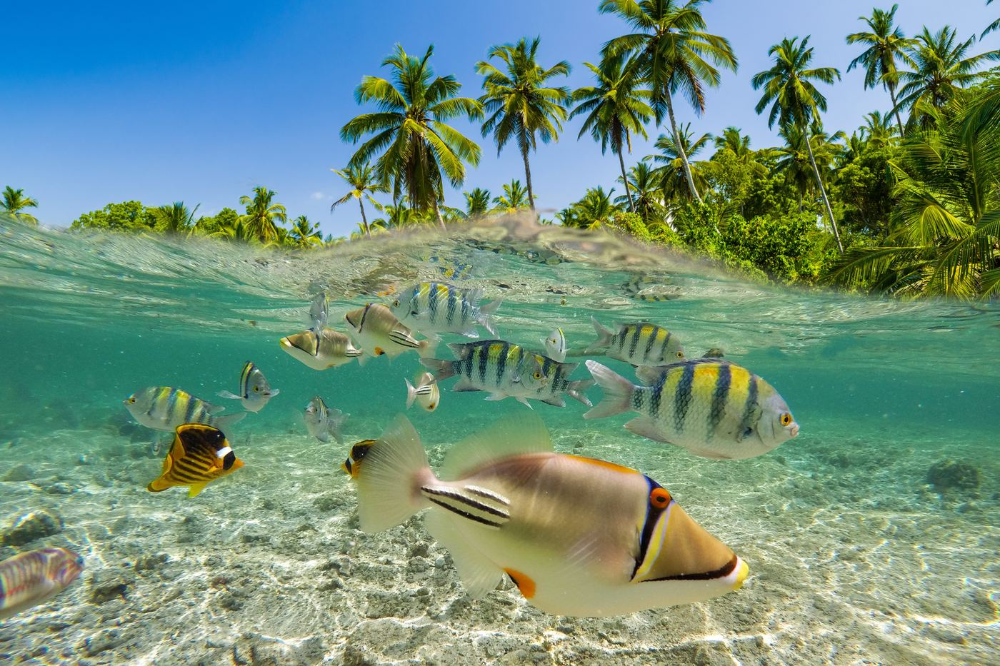
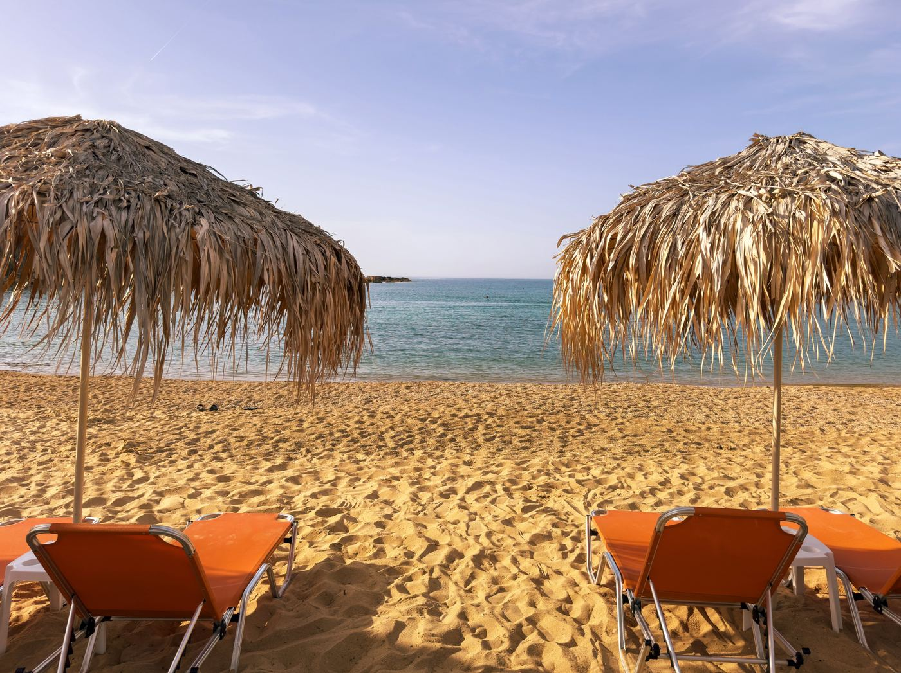

Where the Ocean Meets Your Soul
The World's Most Breathtaking Beaches
From powder-soft white sands to dramatic coastlines kissed by turquoise waves, these beaches are more than destinations – they're feelings.
Where the Ocean Meets Your Soul
From powder-soft white sands to dramatic coastlines kissed by turquoise waves, these beaches are more than destinations – they're feelings.


A great beach is more than sand and water. It is the moment you step out of the car, hear the waves before you see them and forget what time it is. The beaches on this list were chosen for exactly that feeling: clear water, soft light and enough space to breathe, whether you come for snorkeling, long walks or doing absolutely nothing.
Before you book, it helps to keep a few things in mind:
Whichever beach you choose, give it time. The best moments rarely happen on a schedule: a sudden swim at sunset, a chat with a local fisherman or a picnic on warm rocks. Plan the trip, but leave room for those unplanned hours.
Follow me for more content like this, and share the article with your friends!